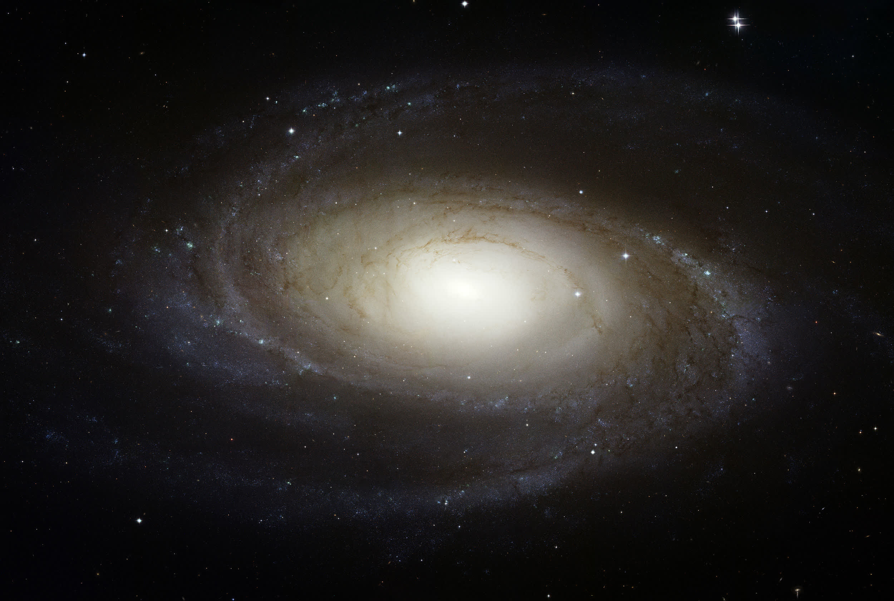
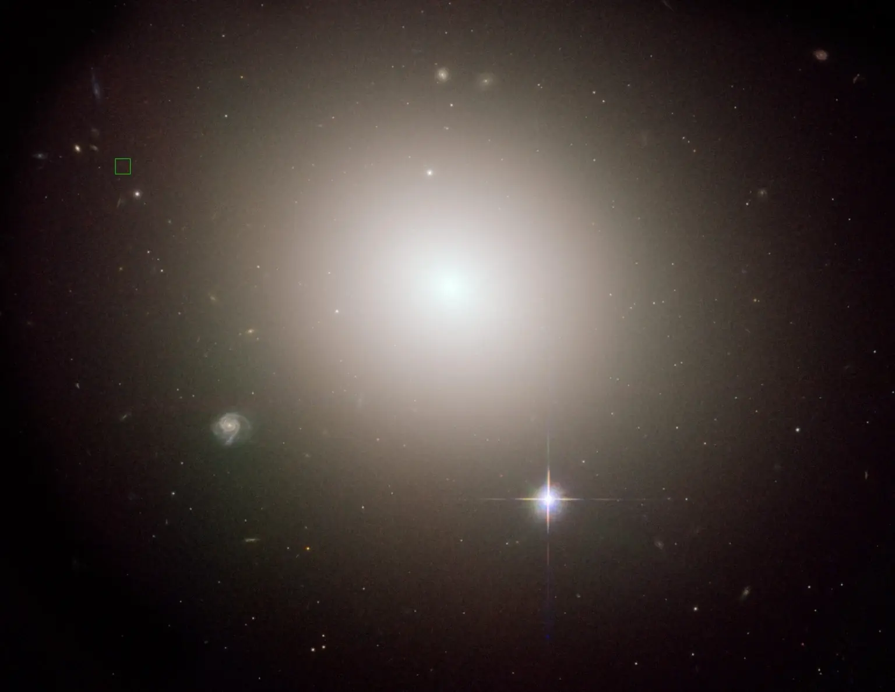
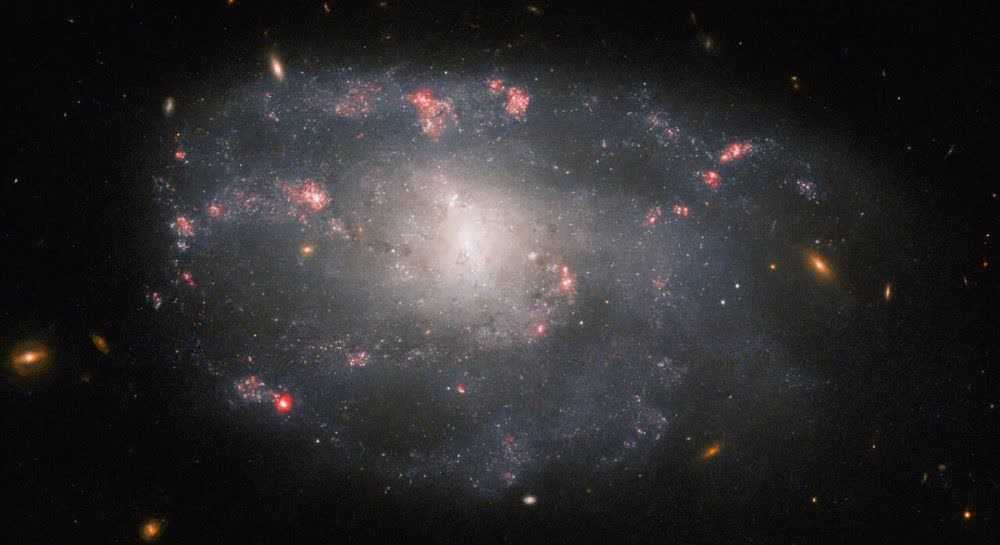

Галактики
Галактики — это огромные гравитационно связанные системы, включающие миллиарды звёзд, межзвёздный газ и пыль, тёмную материю и чёрные дыры. Они бывают разных форм и размеров, играют ключевую роль в эволюции Вселенной и формировании звёздных систем. Изучение галактик помогает понять происхождение и будущее космоса.
Основные типы галактик

Спиральные галактики
Имеют спиральные рукава, пример — Млечный Путь и галактика Андромеды.

Эллиптические галактики
Похожи на вытянутые шары, содержат мало газа и пыли. Пример — галактика M87.

Неправильные галактики
Не имеют чёткой формы. Пример — галактика Магеллановы Облака.
Спиральные галактики — имеют выраженные рукава, активно формируют новые звёзды. Пример: Млечный Путь.
Эллиптические галактики — шарообразные или вытянутые, состоят в основном из старых звёзд, мало газа и пыли.
Неправильные галактики — не имеют чёткой формы, часто возникают при столкновениях.
Линзовидные галактики — промежуточный тип между спиральными и эллиптическими.
Карликовые галактики — самые многочисленные по количеству, но маломассивные.
Эллиптические галактики — шарообразные или вытянутые, состоят в основном из старых звёзд, мало газа и пыли.
Неправильные галактики — не имеют чёткой формы, часто возникают при столкновениях.
Линзовидные галактики — промежуточный тип между спиральными и эллиптическими.
Карликовые галактики — самые многочисленные по количеству, но маломассивные.
Строение галактики
- Ядро — центральная область, часто содержит сверхмассивную чёрную дыру.
- Диск — основная часть спиральных галактик, где расположены рукава и молодые звёзды.
- Гало — сферическая область из старых звёзд и тёмной материи вокруг диска.
- Рукава — области повышенной плотности, где активно рождаются новые звёзды (только у спиральных галактик).
- Тёмная материя — невидимая масса, составляющая до 90% массы галактики.
Известные галактики
- Млечный Путь — наша галактика, содержит более 100 миллиардов звёзд, диаметр ~100 000 световых лет.
- Андромеда — ближайшая к нам крупная галактика, диаметр ~220 000 световых лет, столкнётся с Млечным Путём через 4 млрд лет.
- Галактика M87 — эллиптическая галактика, в центре которой находится сверхмассивная чёрная дыра массой 6,5 млрд масс Солнца.
- Магеллановы Облака — две неправильные галактики-спутники Млечного Пути, видны в Южном полушарии.
Интересные факты о галактиках
- В наблюдаемой Вселенной — более 2 триллионов галактик.
- Галактики могут сливаться, образуя новые структуры, например, эллиптические галактики.
- В центре большинства галактик находятся сверхмассивные чёрные дыры, масса которых может достигать миллиардов масс Солнца.
- Самая удалённая известная галактика GN-z11 находится на расстоянии более 13,4 млрд световых лет.
- Карликовые галактики могут содержать всего несколько миллионов звёзд, а гигантские — триллионы.
- Галактики соединены в скопления и сверхскопления, образуя крупномасштабную структуру Вселенной.